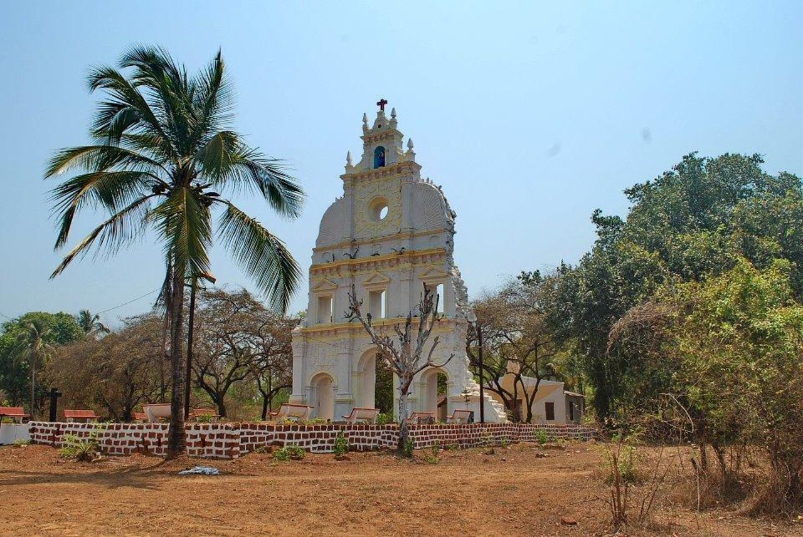
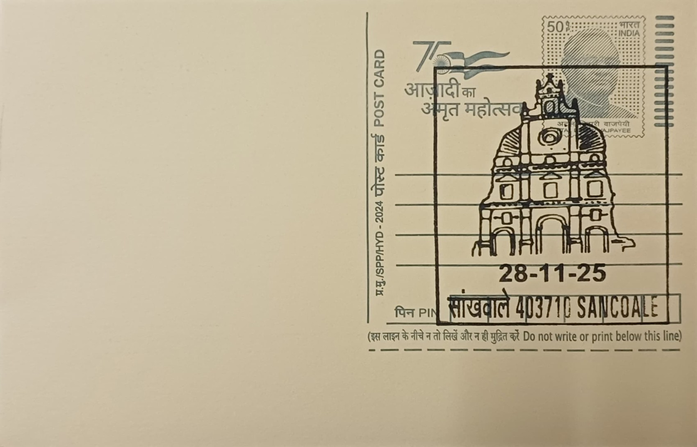
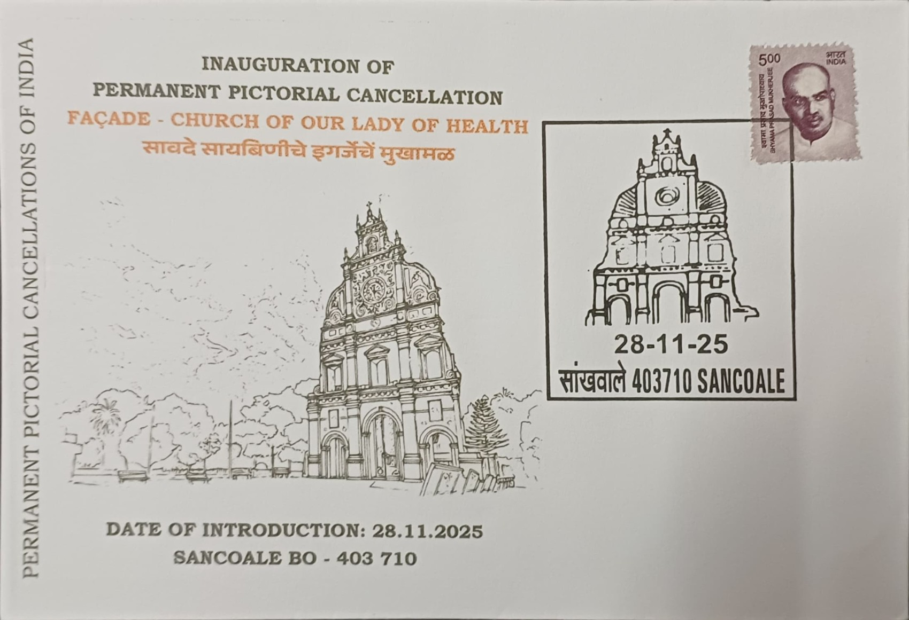
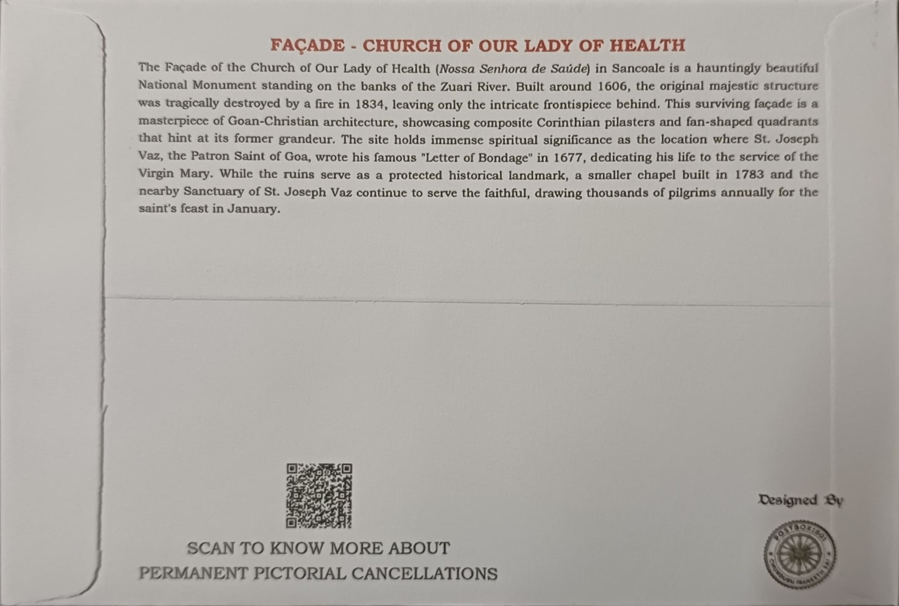

The Church of Our Lady of Health was originally established in the village of Sancoale in South Goa’s Mormugao taluka, on the banks of the Zuari River. Jesuit missionary priests, having first reached Sancoale in 1560, chose this site to commemorate their settlement and evangelization efforts; the church was completed in 1566. The site was significant as an early center of Jesuit activity in Goa, which rapidly became the hub of Catholic missionary outreach in the region during the mid-16th century under Portuguese colonial influence.
Before the church’s construction, the area was a small hamlet without any major Christian religious structures; there is some historical indication that the Jesuits built the church on land that may previously have hosted local Hindu shrines, a common practice in the region to facilitate Christian conversions during early Portuguese rule. The church was later elevated to the status of a parish church in 1606 by the Archbishop of Goa, Aleixo de Menezes, reflecting both its growth in importance and the expanding local Christian community. The structure exemplified early Goan Baroque architecture, with composite Corinthian pilasters, ornamental bas-reliefs, and a richly articulated façade that stood as a landmark on the Zuari’s southern bank.
One of the most historically significant moments at the church occurred in August 1677, when Blessed Joseph Vaz—later declared the Patron of Goa—penned his famed “Letter of Bondage” within its walls, dedicating his missionary life to Our Lady of Health. This document remains a key artifact of Goan ecclesiastical heritage and underscores the church’s role not only as a place of worship but as a hub of spiritual leadership.
However, by the early 19th century, the original church succumbed to calamity. In 1834, a major fire destroyed the main structure of the church, leaving only the ornate façade standing; the exact cause of the blaze is described in some accounts as mysterious, though local narratives sometimes link it to social unrest and the departure of the parish priest following tensions with parishioners. Following the destruction, the new chapel of Our Lady of Health had already been constructed inland behind the ruins in 1783 by Rev. Fr. Proto Faria, and this chapel became the focal place of worship for the Sancoale parish.
Today, only the facade of the old church remains as an evocative testament to its historic grandeur. It stands protected as a national monument, a designation conferred by the Portuguese government in 1937, and continues to attract visitors and pilgrims drawn by its architectural beauty and spiritual associations. The surviving façade—visible even from the Agassaim–Cortalim Bridge—serves as both a visual landmark and a reminder of the layered history of religious and colonial engagement in Goa.

Private Inaugural Cover - Front

Private Inaugural Cover - Back
| Date of Introduction | October 13, 2020 |
|---|---|
| Address | Branch Postmaster, |
| Sancoale BO, | |
| South Goa (dt.), Goa - 403710. |